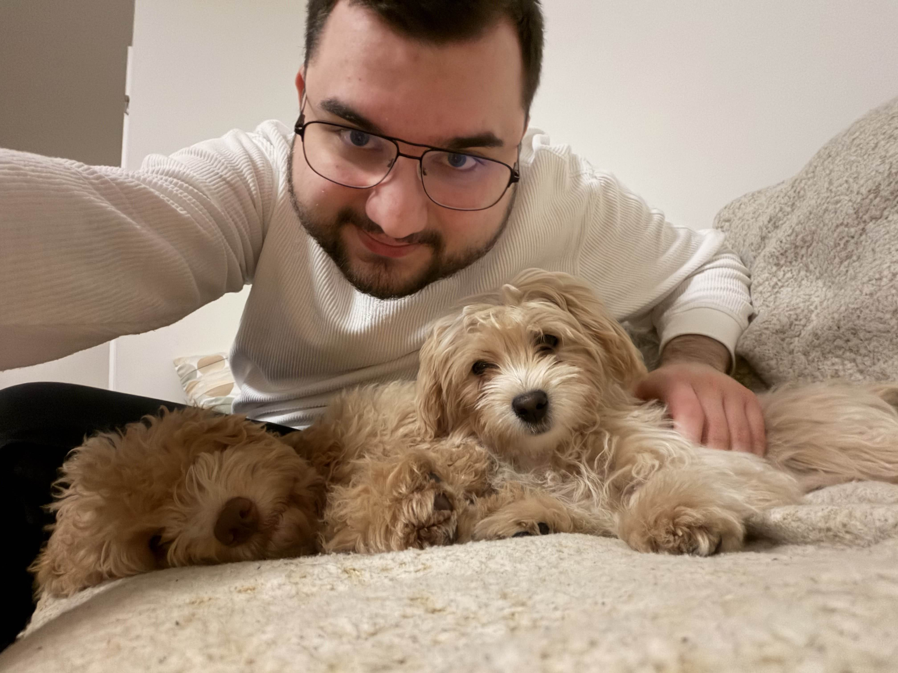
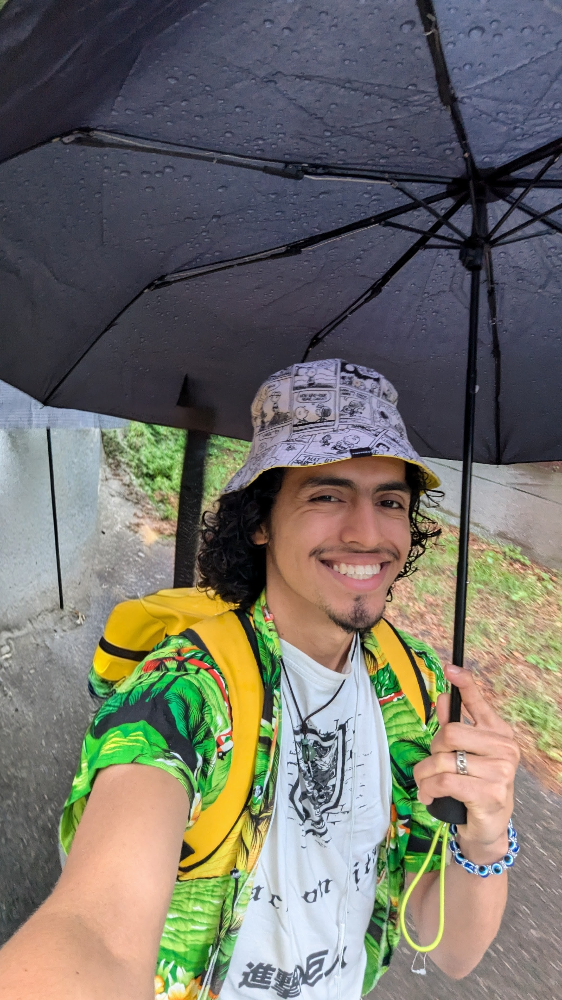
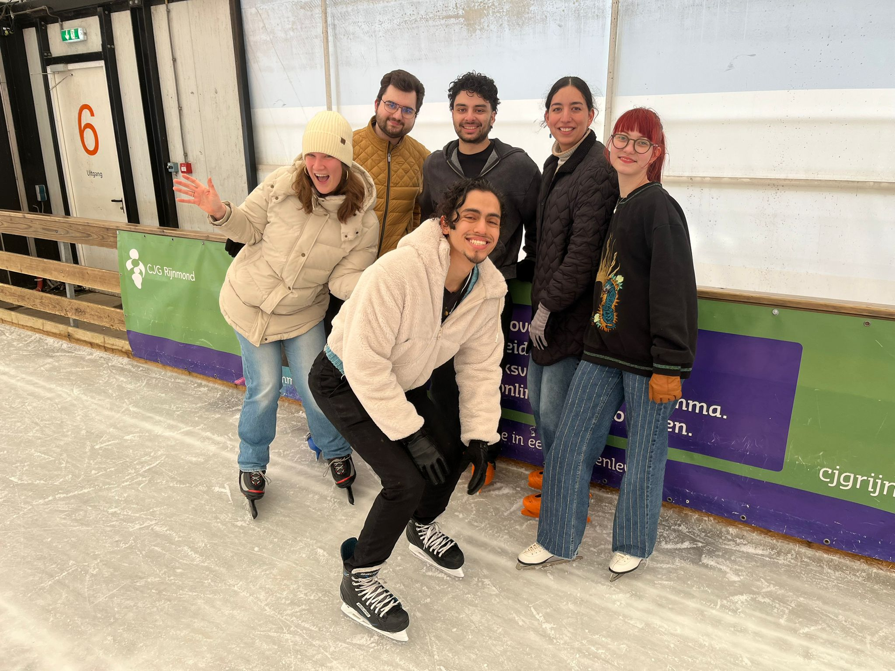

Aziza
CMDOnderzoek en communicatie door ontwerp.

Zes studenten van verschillende opleidingen, verenigd in één missie: digitale innovatie met maatschappelijke impact.
Onderzoek en communicatie door ontwerp.

Onderzoek, ontwerp en ontwikkeling van websites, apps & games.

Verwerken en analyseren van data.

Ontwikkeling van embedded systems, full-stack.

Onderzoek en communicatie.
Ontwikkeling back-end applicaties.


Data minimalisatie, zo min mogelijk data opslaan, en daarvan zo veel mogelijk lokaal en niet in een database. Nadenken over welke data we echt nodig hebben, en welke data gevoelig is.

Dit willen we toepassen door zo goed mogelijk onze doelgroep te onderzoeken en te leren kennen, en de inzichten die we daar uit halen toe te passen in ons project. Daarnaast zullen we ook meer algemene toegankelijkheids onderdelen toepassen, zoals kleurenblind en dyslexie vriendelijk in onze ontwerpen.

Door daily stand-ups te doen en een samencontract samen te stellen, stellen wij ons allemaal verantwoordelijk voor het bijdragen aan het project. Ook gaan wij verantwoordelijk om met kwetsbare informatie.

Door onderzoek te doen naar de doelgroep en hun context beter te leren begrijpen, willen wij bias voorkomen en iedere stakeholder als gelijkwaardige te zien. Ook verdelen wij de taken onderling, zodat wij echt als team samenwerken.

Door onze bevindingen tijdens het onderzoek en testen en helder en transparant neer te zetten, willen wij eerlijk zijn tegenover onze praktijkpartners en ook alle betrokkenen tijdens dit project.
Tijdens de hackathon gingen wij in korte tijd onderzoek doen naar laaggeletterden. Hieruit bleek dat de kans groter is om zelf laaggeletterd te worden, als je ouders ook laaggeletterd zijn. Met deze informatie vormde wij onze eerste ontwerpvraag.
Na een brainstormsessie (met behulp van de Crazy 8-methode) kwamen we op het idee om een kaartspel te ontwerpen. In dit kaartspel krijgen de deelnemers elk een letter en moeten ze in tijdschriften en boeken woorden opzoeken die met die letter beginnen. Degene die een woord vindt dat niet overeenkomt met de woorden van de andere deelnemers, wint een punt.
De doelgroep is laaggeletterde ouders van basisschoolleerlingen. Zij hebben te maken met beperkte lees en schrijfvaardigheden. Dit kan gevolg hebben dat hun kinderen ook moeite kunnen krijgen met taalvaardigheden.
Problemen waar de ouders tegenaan kunnen lopen zijn onder andere: De communicatie vanuit de school verloopt deels via brieven. Hierdoor kan het zijn dat ouders niet altijd begrijpen wat er gaande is op school. Scholen maken ook gebruik van externe systemen, zoals een digitaal ouderportaal en een schoolapp. Ook dit kan een hoge drempel vormen voor de ouders, om betrokken te blijven bij de vooruitgang van hun kind.
Doordat ouders noodgedwongen op afstand blijven, mist de leerling ondersteuning in de thuisomgeving. Daarnaast lezen de ouders een stuk minder voor aan hun kinderen en zingen zij minder liedjes. Onderzoek laat zien dat dit cruciaal is voor de ontwikkeling van de taalvaardigheid van het kind. Gevolg is dan een verhoogd risico op laaggeletterdheid bij het kind, maar ook het buitengesloten voelen van de ouders.


Ouders voelen zich zelfverzekerd genoeg in hun eigen kunnen. Beperkte taalvaardigheden vormen geen belemmering meer om actief contact te zoeken met de school. Leerkrachten en medewerkers kunnen de ouders goed ondersteunen.
De ouders kunnen brieven van de school in grote lijnen begrijpen. Wanneer zij iets niet volledig begrijpen, voelen ze zich zelfverzekerd om de leerkracht om verheldering te vragen. Er is sprake van open communicatie waarbij de leerkracht hen effectief kan ondersteunen.
De ouders creëren thuis een stimulerende taalomgeving. Ze kunnen hun kind in grote lijnen ondersteunen bij de taalontwikkeling. Hierdoor wordt de kans op het overdragen van laaggeletterdheid verlaagd.
Na de Hackathon en in combinatie met de interviews met praktijkpartners, hebben we besloten om ons te richten op laaggeletterde ouders. Wel houden we er rekening mee dat dit een doelgroep kan zijn dat vrij moeilijk te bereiken is.
Daarom richten wij ons in Sprint 1 op om de doelgroep beter te leren kennen door middel van deskresearch en ook om de mogelijkheden qua technologieën verder te onderzoeken.
Om deze sprint erachter te komen hoe we laaggeletterde ouders beter kunnen begrijpen, of we ons op hen of hun kinderen richten, en welke aanpak en technieken het meest geschikt zijn, hebben we het volgende uitgevoerd:
Laaggeletterdheid speelt zich niet alleen af bij 1 persoon maar heeft invloed op het hele gezin. Om dat zichtbaar te maken, hebben we persona's gemaakt van twee ouders en een kind


Uit ons onderzoek kwamen verschillende inzichten naar voren. In deze insight cards hebben we de belangrijkste gebundeld om beter te begrijpen wat er speelt bij de doelgroep.


Voor grootschaalse data analyses zijn er verschillende mogelijkheden. We kunnen bijvoorbeeld data vinden bij CBS etc etc (vul dit aan)
Tijdens het onderzoek kwamen ook andere interessante inzichten naar voren. Zo zijn er duidelijke verschillen binnen de doelgroep: voor migranten die in hun land van herkomst ook laaggeletterd waren, is de stap vaak nog groter en uitdagender. Daarnaast blijkt dat herhaling en oefening erg belangrijk zijn, omdat iets tijdens een les wel kan lukken, maar thuis niet altijd. Voor nu blijven wij ons richten op ouders met laaggeletterdheid, maar we zien ook dat deze doelgroep in samenhang is met hun kinderen.
In de volgende sprint willen we de lopende interventies beter begrijpen, indien mogelijk in contact komen met de doelgroep bij events, brainstormen over ideeën, en deze eerste concepten in eenvoudige prototypes verkennen.